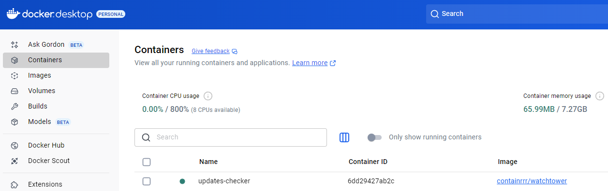

Это простая программа, которая поможет вам скачать комментарии с любого видео на YouTube. Установка займёт около 5 минут.
Выберите вашу операционную систему:
[System.Environment]::GetEnvironmentVariable('PROCESSOR_ARCHITECTURE')
Если в вашем Docker Desktop уже отображается контейнер как на картинке, тогда пропустите этот шаг и переходите к шагу 3.
docker run --detach --name updates-checker -e WATCHTOWER_POLL_INTERVAL=60 --volume /var/run/docker.sock:/var/run/docker.sock containrrr/watchtower
После вставки команды в PowerShell дождитесь её завершения. Обычно это занимает несколько секунд.
docker run -d --name youtube-parser -p 8101:8101 -e HOSTNAME=0.0.0.0 --restart unless-stopped timponomarev/youtube-comments-app:latest
После вставки команды в PowerShell дождитесь её завершения. Обычно это занимает несколько секунд.
Установка этого контейнера настоятельно рекомендуется для бесперебойной работы приложения.
Если в вашем Docker Desktop уже отображается контейнер как на картинке, тогда пропустите этот шаг и переходите к шагу 3.
docker run --detach --name updates-checker -e WATCHTOWER_POLL_INTERVAL=60 --volume /var/run/docker.sock:/var/run/docker.sock containrrr/watchtower
После вставки команды в терминал дождитесь её завершения. Обычно это занимает несколько секунд.
docker run -d --name youtube-parser -p 8101:8101 -e HOSTNAME=0.0.0.0 --restart unless-stopped timponomarev/youtube-comments-app:latest
После вставки команды в терминал дождитесь её завершения. Обычно это занимает несколько секунд.
Если что-то не получается: